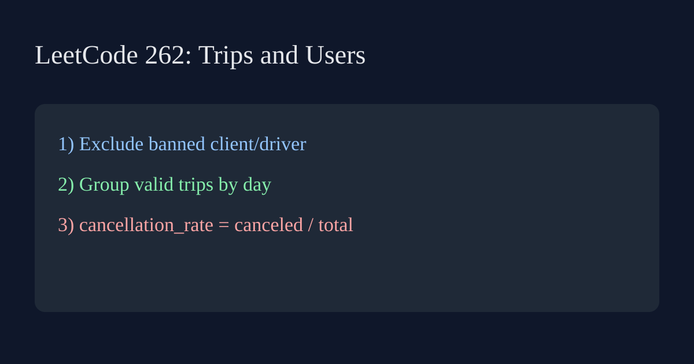

LeetCode 262: Trips and Users (Cancellation Rate by Day)

English
Filter out trips where client or driver is banned, keep records between 2013-10-01 and 2013-10-03, group by request day, then compute cancellation rate = canceled / total and round to 2 decimals.
class Solution { public List<String[]> cancellationRate(String[][] trips, String[][] users) { Set<String> banned = new HashSet<>(); for (String[] u : users) if ("Yes".equals(u[2])) banned.add(u[0]); Map<String, int[]> stat = new TreeMap<>(); for (String[] t : trips) { String day = t[5]; if (day.compareTo("2013-10-01") < 0 || day.compareTo("2013-10-03") > 0) continue; if (banned.contains(t[1]) || banned.contains(t[2])) continue; stat.putIfAbsent(day, new int[2]); stat.get(day)[0]++; if (!"completed".equals(t[3])) stat.get(day)[1]++; } List<String[]> ans = new ArrayList<>(); for (var e : stat.entrySet()) { double rate = (double)e.getValue()[1] / e.getValue()[0]; ans.add(new String[]{e.getKey(), String.format("%.2f", rate)}); } return ans; } }func cancellationRate(trips [][]string, users [][]string) [][2]string { banned := map[string]bool{}; for _, u := range users { if u[2] == "Yes" { banned[u[0]] = true } } type pair struct { tot, cancel int }; stat := map[string]*pair{}; for _, t := range trips { day := t[5]; if day < "2013-10-01" || day > "2013-10-03" || banned[t[1]] || banned[t[2]] { continue }; if _, ok := stat[day]; !ok { stat[day] = &pair{} }; stat[day].tot++; if t[3] != "completed" { stat[day].cancel++ } }; days := []string{"2013-10-01", "2013-10-02", "2013-10-03"}; ans := make([][2]string, 0); for _, d := range days { if p, ok := stat[d]; ok { ans = append(ans, [2]string{d, fmt.Sprintf("%.2f", float64(p.cancel)/float64(p.tot))}) } }; return ans }vector<pair<string,string>> cancellationRate(vector<vector<string>>& trips, vector<vector<string>>& users) { unordered_set<string> banned; for (auto &u : users) if (u[2] == "Yes") banned.insert(u[0]); map<string, pair<int,int>> stat; for (auto &t : trips) { string day = t[5]; if (day < "2013-10-01" || day > "2013-10-03" || banned.count(t[1]) || banned.count(t[2])) continue; stat[day].first++; if (t[3] != "completed") stat[day].second++; } vector<pair<string,string>> ans; for (auto &[d, p] : stat) { double r = (double)p.second / p.first; char buf[16]; snprintf(buf, sizeof(buf), "%.2f", r); ans.push_back({d, buf}); } return ans; }def cancellation_rate(trips, users):
banned = {u[0] for u in users if u[2] == "Yes"}
stat = {}
for t in trips:
day = t[5]
if day < "2013-10-01" or day > "2013-10-03":
continue
if t[1] in banned or t[2] in banned:
continue
stat.setdefault(day, [0, 0])
stat[day][0] += 1
if t[3] != "completed":
stat[day][1] += 1
return [[d, f"{c / n:.2f}"] for d, (n, c) in sorted(stat.items())]function cancellationRate(trips, users) { const banned = new Set(users.filter(u => u[2] === "Yes").map(u => u[0])); const stat = new Map(); for (const t of trips) { const day = t[5]; if (day < "2013-10-01" || day > "2013-10-03" || banned.has(t[1]) || banned.has(t[2])) continue; if (!stat.has(day)) stat.set(day, [0, 0]); const p = stat.get(day); p[0]++; if (t[3] !== "completed") p[1]++; } return [...stat.entries()].sort((a,b)=>a[0].localeCompare(b[0])).map(([d,[n,c]]) => [d, (c / n).toFixed(2)]); }中文
先过滤 client 或 driver 被封禁的行程，再限制日期到 2013-10-01 ~ 2013-10-03。按天统计总订单与取消订单，最后计算取消率（取消/总数）并保留两位小数。
class Solution { public List<String[]> cancellationRate(String[][] trips, String[][] users) { Set<String> banned = new HashSet<>(); for (String[] u : users) if ("Yes".equals(u[2])) banned.add(u[0]); Map<String, int[]> stat = new TreeMap<>(); for (String[] t : trips) { String day = t[5]; if (day.compareTo("2013-10-01") < 0 || day.compareTo("2013-10-03") > 0) continue; if (banned.contains(t[1]) || banned.contains(t[2])) continue; stat.putIfAbsent(day, new int[2]); stat.get(day)[0]++; if (!"completed".equals(t[3])) stat.get(day)[1]++; } List<String[]> ans = new ArrayList<>(); for (var e : stat.entrySet()) { double rate = (double)e.getValue()[1] / e.getValue()[0]; ans.add(new String[]{e.getKey(), String.format("%.2f", rate)}); } return ans; } }func cancellationRate(trips [][]string, users [][]string) [][2]string { banned := map[string]bool{}; for _, u := range users { if u[2] == "Yes" { banned[u[0]] = true } } type pair struct { tot, cancel int }; stat := map[string]*pair{}; for _, t := range trips { day := t[5]; if day < "2013-10-01" || day > "2013-10-03" || banned[t[1]] || banned[t[2]] { continue }; if _, ok := stat[day]; !ok { stat[day] = &pair{} }; stat[day].tot++; if t[3] != "completed" { stat[day].cancel++ } }; days := []string{"2013-10-01", "2013-10-02", "2013-10-03"}; ans := make([][2]string, 0); for _, d := range days { if p, ok := stat[d]; ok { ans = append(ans, [2]string{d, fmt.Sprintf("%.2f", float64(p.cancel)/float64(p.tot))}) } }; return ans }vector<pair<string,string>> cancellationRate(vector<vector<string>>& trips, vector<vector<string>>& users) { unordered_set<string> banned; for (auto &u : users) if (u[2] == "Yes") banned.insert(u[0]); map<string, pair<int,int>> stat; for (auto &t : trips) { string day = t[5]; if (day < "2013-10-01" || day > "2013-10-03" || banned.count(t[1]) || banned.count(t[2])) continue; stat[day].first++; if (t[3] != "completed") stat[day].second++; } vector<pair<string,string>> ans; for (auto &[d, p] : stat) { double r = (double)p.second / p.first; char buf[16]; snprintf(buf, sizeof(buf), "%.2f", r); ans.push_back({d, buf}); } return ans; }def cancellation_rate(trips, users):
banned = {u[0] for u in users if u[2] == "Yes"}
stat = {}
for t in trips:
day = t[5]
if day < "2013-10-01" or day > "2013-10-03":
continue
if t[1] in banned or t[2] in banned:
continue
stat.setdefault(day, [0, 0])
stat[day][0] += 1
if t[3] != "completed":
stat[day][1] += 1
return [[d, f"{c / n:.2f}"] for d, (n, c) in sorted(stat.items())]function cancellationRate(trips, users) { const banned = new Set(users.filter(u => u[2] === "Yes").map(u => u[0])); const stat = new Map(); for (const t of trips) { const day = t[5]; if (day < "2013-10-01" || day > "2013-10-03" || banned.has(t[1]) || banned.has(t[2])) continue; if (!stat.has(day)) stat.set(day, [0, 0]); const p = stat.get(day); p[0]++; if (t[3] !== "completed") p[1]++; } return [...stat.entries()].sort((a,b)=>a[0].localeCompare(b[0])).map(([d,[n,c]]) => [d, (c / n).toFixed(2)]); }